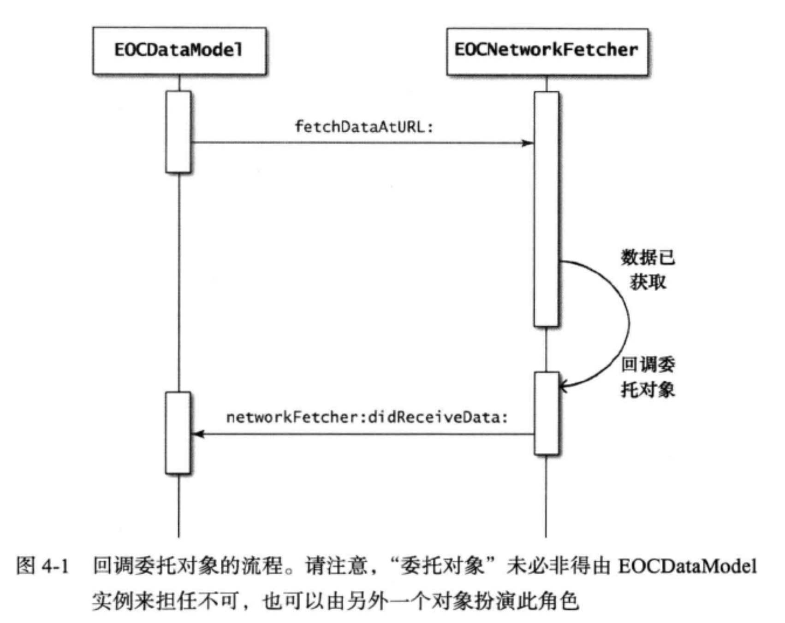
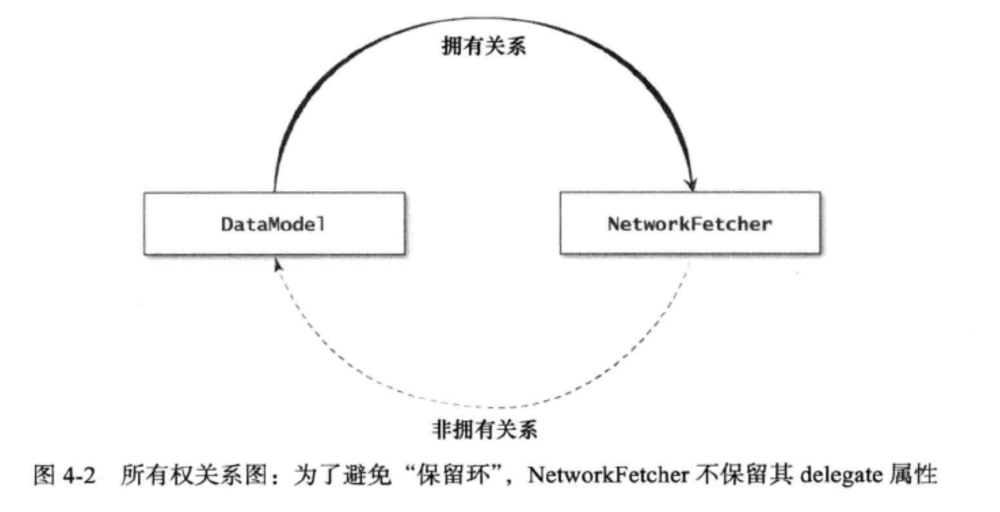

Objective-C语言有一项特性叫做“协议”（protocol)，它与Java的“接口"（interface)类似。 Objective-C不支持多重继承，因而我们把某个类应该实现的一系列方法定义在协议里面。协议最为常见的用途是实现委托模式，不过也有其他用法。理解并善用协议可令代码变得更易维护，因为协议这种方式能很好地描述接口。
“分类”（Category)也是Objective-C的一项重要语言特性。利用分类机制，我们无须继承子类即可直接为当前类添加方法，而在其他编程语言中，则需通过继承子类来实现。由于 Objective-C运行期系统是髙度动态的，所以才能支持这一特性，然而，其中也隐藏着一些陷阱，因此在使用分类之前，应该先理解它。
OC中的通信方式有很多种，我们经常使用一种叫做“委托模式”（Delegate pattem)的编程设计模式来实现对象间的通信，该模式的主旨是: 定义一套接口，某对象若想接受另一个对象的委托，则需遵从此接口，以便成为其“委托对象”（delegate)。而这“另一个对象”则可以给其委托对象回传一些信息，也可以在发生相关事件时通知委托对象。
此模式可将数据与业务逻辑解耦。比方说，用户界面里有个显示一系列数据所用的视图，那么，此视图只应包含显示数据所需的逻辑代码，而不应决定要显示何种数据以及数据之间如何交互等问题。视图对象的属性中，可以包含负责数据与事件处理的对象。这两种对象分别称为“数据源"（data source)与“委托”（delegate)。
我们来举个假设要编写一个从网上获取数据的类。此类也许要从远程服务器的某个资源里获取数据。那个远程服务器可能过很长时间才会应答，而在获取数据的过程中阻塞应用程序则是一种非常糟糕的做法。于是，在这种情况下，我们通常会使用委托模式：获取网络数据的类含有一个“委托对象”，在获取完数据之后，它会回调这个委托对象。
EOCDataModel对象就是EOCNetworkFetcher的委托对象。EOCDataModel请求EOCNetworkFetcher "以异步方式执行一项任务"（perform a task asynchronously),EOCNetworkFetcher在执行完这项任务之后，就会通知其委托对象，也就是EOCDataModel。

利用协议机制，很容易就能以Objective-C代码实现此模式。在图4-1所演示的这种情况 下，协议可以这样来定义：
@protocol EOCNetworkFetcherDelegate
-(void)networkFetcher:(EOCNetworkFetcher*)fetcher
didReceiveData:(NSData*)data;
-(void)networkFetcher:(EOCNetworkFetcher*)fetcher
didFailWithError:(NSError*)error;
@end
委托协议名通常是在相关类名后面加上Delegate一词，整个类名采用“驼峰法”来写。 以这种方式来命名委托协议的话，使用此代码的人很快就能理解其含义了。
然后我们要在这个EOCNetworkFetcher中设置一个属性来存放其委托对象。接口可以写成这样：
@interface EOCNetworkFetcher : NSObject
@property (nonatomic, weak) id<EOCNetworkFetcherDelegate> delegate;
一定要注意：这个属性需定义成weak,而非strong,因为两者之间必须为“非拥有关系” (nonowning relationship)。通常情况下，扮演delegate的那个对象也要持有本对象。所以我们要用weak来声明一种非拥有关系来避免“保留环”。

实现委托对象的办法是声明某个类遵从委托协议，然后把协议中想实现的那些方法在类 里实现出来。某类若要遵从委托协议，可以在其接口中声明，也可以在“class-contimiation分类”中声明。如果要向外界公布此类实现了某协议，那么就在接口中声明，而如果这个协议是个委托协议的话，那么通常只会在类的内部使用。所以说，这种情况一般都是在“class-continuation分类”里声明的：
@implementation EOCDataModel () <EOCNetworkFetcherDelegate>
@end
@implementation EOCDataModel
-(void)networkFetcher:(EOCNetworkFetcher*)fetcher
didReceiveData:(NSData*)data {
/* Handle data */
}
-(void)networkFetcher:(EOCNetworkFetcher*)fetcher
didFailWithError:(NSError*)error {
/* Handle error */
}
@and
之后要用委托对象来调用方法时，必须提前使用类型信息査询方法（参见第14条）判断这个委托对象能否响应相关选择子。以EOCNetworkFetcher为例，应该这样写：
NSData *data = /*data obtained from network */;
if ([_delegate respondsToSelector:
@selector(networkFetcher:didReceiveData:)))
{
[_delegate networkFetcher:self didReceiveData:data];
}
但是当方法变多了，我们就会频繁的来检查委托对象是否能够相应选择子，其实这个操作检测一次就可以了，所以我们可以用“位段（bitfield)”数据类型将该方法响应能力缓存起来。
这是一项乏人问津的C语言特性，但在此处用起来却正合适。我们可以把结构体中某个字段所占用的二进制位个数设为特定的值。比如像这样：
struct data {
unsigned int fieldA : 8;
unsigned int fieldB : 4;
unsigned int fieldC : 2;
unsigned int fieldD : 1;
};
在结构体中，fieldA位段将占用8个二进制位，fieldB占用4个，fieldC占用两个，fieldD占用1个。于是，fieldA可以表示0至255之间的值，而fieldD则可以表示0或1这两个值。 我们举例子来说的话就是：
@interface EOCNetworkFetcher () {
struct {
unsigned int didReceiveData : 1;
unsigned int didFailWithError : 1;
unsigned int didUpdateProgressTo : 1;
}_delegateFlags;
这个结构体用来缓存委托对象是否能响应特定的选择子。实现缓存功能所用的代码可以 写在delegate属性所对应的设置方法里：
-(void)setDelegate:(id<EOCNetworkFetcherDelegate>)delegate {
_delegate = delegate;
_delegateFlags.didReceiveData =
[delegate respondsToSelector:
@selector(networkFetcher:didReceiveData:)];
_delegateFlags.didFailWithError =
[delegate respondsToSelector:
@selector(networkFetcher:didFailWithError:)];
_delegateFlags.didUpdateProgressTo =
[delegate respondsToSelector:
@selector(networkFetcher:didUpdateProgressTo:)];
}
这样的话，每次调用delegate的相关方法之前，就不用检测委托对象是否能响应给定的选择子了，而是直接查询结构体里的标志：
if (_delegateFlags.didUpdateProgressTo) {
[_delegate networkFetcher:self
didUpdateProgressTo:currentProgress];
}
在相关方法要调用很多次时，值得进行这种优化。而是否需要优化，则应依照具体代码来定。这就需要分析代码性能，并找出瓶颈，若发现执行速度需要改进，则可使用此技巧。如果要频繁通过数据源协议从数据源中获取多份相互独立的数据，那么这项优化技术极有可能会提高程序效率.
要点
- 委托模式为对象提供了一套接口，使其可由此将相关事件告知其他对象。
- 将委托对象应该支持的接口定义成协议，在协议中把可能需要处理的事件定义成方法。
- 当某对象需要从另外一个对象中获取数据时，可以使用委托模式。这种情境下，该模式亦称“数据源协议”（data source protocal)。
- 若有必要，可实现含有位段的结构体，将委托对象是否能响应相关协议方法这一信息 缓存至其中。